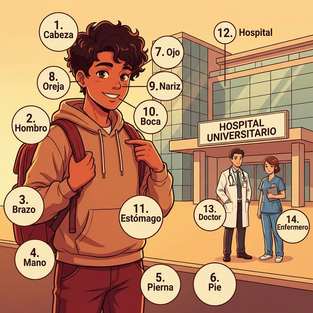
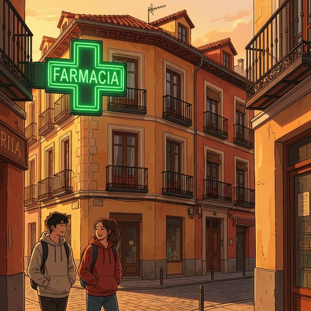

¡Bienvenidos a bordo! Our journey begins with the most essential tool we have: our body. In this chapter, we will learn how to name the parts of the body and describe how we feel physically. You'll be surprised to find how many Spanish words are hidden in English academic vocabulary!
한국어 번역:
환영합니다! 우리의 여행은 우리가 가진 가장 필수적인 도구인 몸에서 시작됩니다. 이 장에서는 신체 부위의 이름을 익히고 신체 상태를 설명하는 방법을 배웁니다. 영어의 학술 어휘 속에 얼마나 많은 스페인어 단어들이 숨겨져 있는지 알게 되면 놀라실 겁니다!
학습 목표 (Learning Objectives):
- Identify and name 15+ body parts from head to toe.
- Master the irregular verb tener (to have) for physical sensations.
- Understand the cultural significance of personal space and greetings in Spain.
- Learn to express basic health states and identify medical professionals.
한국어 번역:
스페인 사람들은 만날 때 종종 '도스 베소스(Dos Besos, 두 번의 키스)'를 합니다. 입술에 하는 진짜 키스가 아니라 양 볼을 가볍게 맞추는 것인데, 오른쪽부터 시작해 왼쪽으로 합니다. 이는 스페인 사람들의 따뜻하고 신체적인 사교 문화를 반영하며, 신체(cuerpo)에 대해 말하는 방식에서도 이러한 특징이 드러납니다.
Aprenderemos las partes del cuerpo y el entorno de la salud.
한국어 번역:
신체 부위와 건강 관련 환경에 대한 단어들을 배워보겠습니다.

Below is your bridge between English and Spanish. Use your knowledge of English's Latin roots to skip the rote memorization!
| # | Spanish | English Bridge | Korean Tip |
|---|---|---|---|
| 1 | la cabeza | Capital (head of a city/column) | 머리를 뜻하며, 영어의 capital과 어원이 같습니다. |
| 2 | el hombro | — | 어깨를 뜻합니다. |
| 3 | el brazo | Embrace (to hold in arms) ✅ | '포옹하다'는 뜻의 embrace를 떠올려보세요. |
| 4 | la mano | Manual (done by hand) ✅ | 수동을 뜻하는 manual은 '손'에서 왔습니다. |
| 5 | la pierna | — | 다리를 뜻합니다. |
| 6 | el pie | Pedal (foot lever) ✅ | 자전거 페달처럼 발로 밟는 것을 생각하세요. |
| 7 | el ojo | Ocular (eye-related) ✅ | 안과적인 것을 뜻하는 ocular와 어원이 같습니다. |
| 8 | la oreja | Aural (ear-related) | 귀를 뜻하며, 청각적인 것을 뜻하는 aural과 연결됩니다. |
| 9 | la nariz | Nasal (nose-related) ✅ | 코와 관련된 형용사 nasal을 기억하세요. |
| 10 | la boca | — | 입을 뜻합니다. |
| 11 | el estómago | Stomach ✅ (Perfect Cognate) | 복잡한 철자지만 발음은 비슷합니다. |
| 12 | hospital | Hospital ✅ (Perfect Cognate) | 'h'는 언제나 묵음입니다. [오스피탈] |
| 13 | doctor / doctora | Doctor ✅ (Perfect Cognate) | 성별에 따라 o/a로 구분합니다. |
| 14 | enfermero/a | Nurse (care provider) | 간호사를 뜻합니다. |
✅ 표시가 있는 단어는 영어 단어와 어원이 매우 유사하여 기억하기 쉽습니다.
In English, we say "I am hungry." In Spanish, we use the logic of possession: "I have hunger." This is a key mental shift for English speakers!
실전 예문 (Practical Examples):
- ES: Tengo mucho sueño ahora. (지금 너무 졸려요.)
- EN: I am very sleepy now.
- ES: ¿Tienes sed? Aquí hay agua. (목마르니? 여기 물 있어.)
- EN: Are you thirsty? Here is some water.
tener is one of the most versatile irregular verbs in Spanish. It is used for possession, age ("I have 20 years"), and physical states.
| 주어 (Subject) | 변화형 (Conjugation) |
|---|---|
| yo | tengo |
| tú | tienes |
| él / ella / usted | tiene |
| nosotros / nosotras | tenemos |
| vosotros / vosotras | tenéis |
| ellos / ellas / ustedes | tienen |
tengo는 1인칭 단수에서만 g가 붙는 특이한 불규칙입니다. 나머지에서는 e가 ie로 변하는 'boot verb' (어간 변화 동사) 형태를 보입니다. nosotros와 vosotros는 예외적으로 변하지 않는 '장화 밖' 형태임을 기억하세요!
Spain boasts one of the world's most efficient public healthcare systems, known as Seguridad Social.
Every residential neighborhood has a Centro de Salud (Health Center) where locals go for their first consultations. Unlike the private-heavy systems elsewhere, most basic care is free for citizens and residents. This accessibility, combined with the Mediterranean Diet and a culture of walking, contributes to Spain having one of the highest life expectancies in the world. When you visit, look for the luminous green cross signs—those are the Farmacias, and they are almost on every corner!
한국어 번역:
스페인은 '세구리다드 소시알(Seguridad Social)'이라고 불리는 세계적으로 효율적인 공공 의료 시스템을 자랑합니다. 모든 거주 지역에는 주민들이 첫 진료를 받기 위해 찾는 '센트로 데 살루드(Centro de Salud, 보건소)'가 있습니다. 다른 나라의 민간 중심 시스템과 달리, 대부분의 기본 진료는 시민과 거주자에게 무료입니다. 이러한 접근성은 지중해식 식단 및 걷는 문화와 결합되어 스페인이 세계에서 가장 높은 기대 수명을 가진 국가 중 하나가 되도록 기여합니다. 방문하실 때 빛나는 초록색 십자가 간판을 찾아보세요. 그것이 약국(Farmacias)이며, 거의 모든 골목마다 있습니다!
깔끔한 정렬을 위해 아래 표를 참조하여 알맞은 번호와 알파벳을 연결하세요.
| ES 단어 (Spanish) | 선택지 (Selection) |
|---|---|
| 1. Cabeza | a) Foot |
| 2. Brazo | b) Eye |
| 3. Ojo | c) Head |
| 4. Pie | d) Arm |
| 5. Mano | e) Hand |
빈칸에 알맞은 tener 동사 변화형을 적어 문장을 완성하세요. (Pay attention to the subject!)
다음 문장을 Spanish로 번역하세요.
La salud de Ana
Hola, me llamo Ana. Hoy estoy muy cansada. Tengo mucho sueño porque estudio mucho en la universidad. También tengo hambre porque no como nada por tres horas. Quiero comer algo saludable para mi estómago. Mi brazo está bien, pero mi pierna está un poco cansada de caminar por el campus. ¡Mañana estaré mejor en el hospital con el doctor!
한국어 번역 (Korean Translation):
Ana의 건강
안녕, 내 이름은 Ana야. 오늘 나는 매우 피곤해. 대학교에서 공부를 많이 해서 아주 졸려. 또한 3시간 동안 아무것도 먹지 않아서 배도 고파. 위장에 좋은 건강한 음식을 먹고 싶어. 내 팔은 괜찮지만, 내 다리는 캠퍼스를 걷느라 좀 피곤해. 내일은 병원에서 의사 선생님과 함께라면 더 나아질 거야!
En el Centro de Salud
| Spanish | Korean |
|---|---|
| Ana: Hola, Pedro. ¿Cómo estás? | Ana: 안녕, Pedro. 어떻게 지내? |
| Pedro: Hola, Ana. No estoy muy bien hoy. | Pedro: 안녕, Ana. 오늘은 별로 안 좋아. |
| Ana: ¿Qué tienes? ¿Te duele algo? | Ana: 어디가 안 좋아? 어디 아픈 데 있어? |
| Pedro: Tengo dolor de estómago y calor. | Pedro: 배가 아프고 열이 나(더워). |
| Ana: ¿Tienes hambre o sed? | Ana: 배고프거나 목마르니? |
| Pedro: No, no tengo hambre. Solo dolor. | Pedro: 아니, 배 안 고파. 그냥 아파. |
| Ana: Tienes que ir al hospital o a la farmacia. | Ana: 병원이나 약국에 가야 해. |
| Pedro: Sí, voy ahora con la doctora García. | Pedro: 응, 지금 García 의사 선생님께 갈 거야. |
Check your progress! Can you do the following?
- [ ] List 15 body parts in Spanish with their articles.
- [ ] Conjugate tener for all 6 subject pronouns without looking.
- [ ] Explain the difference between "I am hungry" and "Tengo hambre".
- [ ] Name the primary health center type in Spain.
¡Excelente trabajo! You've successfully navigated the first chapter of your Spanish journey. You now have the tools to talk about your physical self and basic needs. Remember, learning a language is like exercising a muscle—keep practicing the tener phrases daily. ¡Hasta pronto!
6. Práctica A: 1-c, 2-d, 3-b, 4-a, 5-e
6. Práctica B: 1. tengo, 2. tenemos, 3. tienes, 4. tiene, 5. tienen
6. Práctica C:
1. Tengo dolor de cabeza.
2. ¿Tiene usted hambre?
3. Tenemos sed.
4. Ellos tienen frío.
5. ¿Tienes sueño?